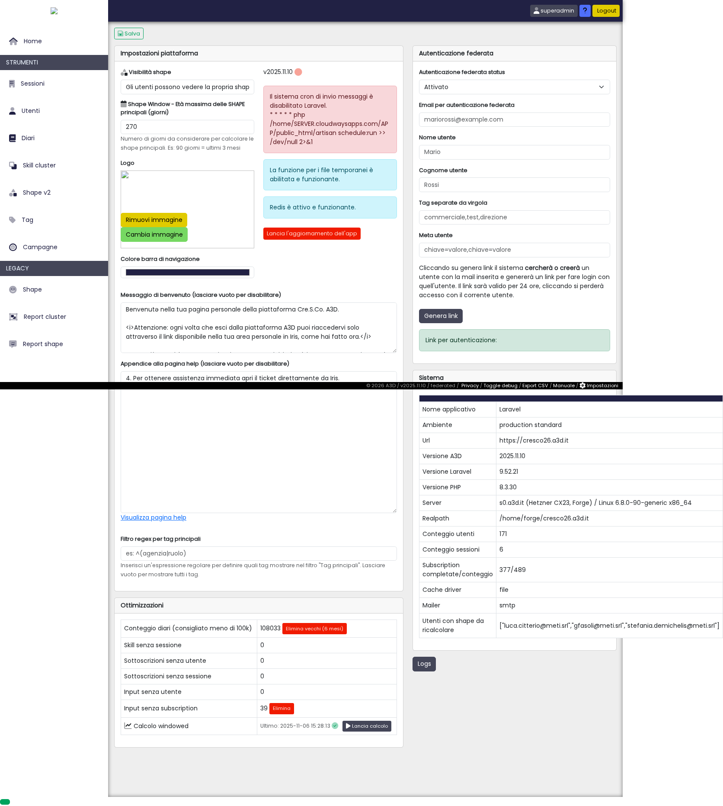
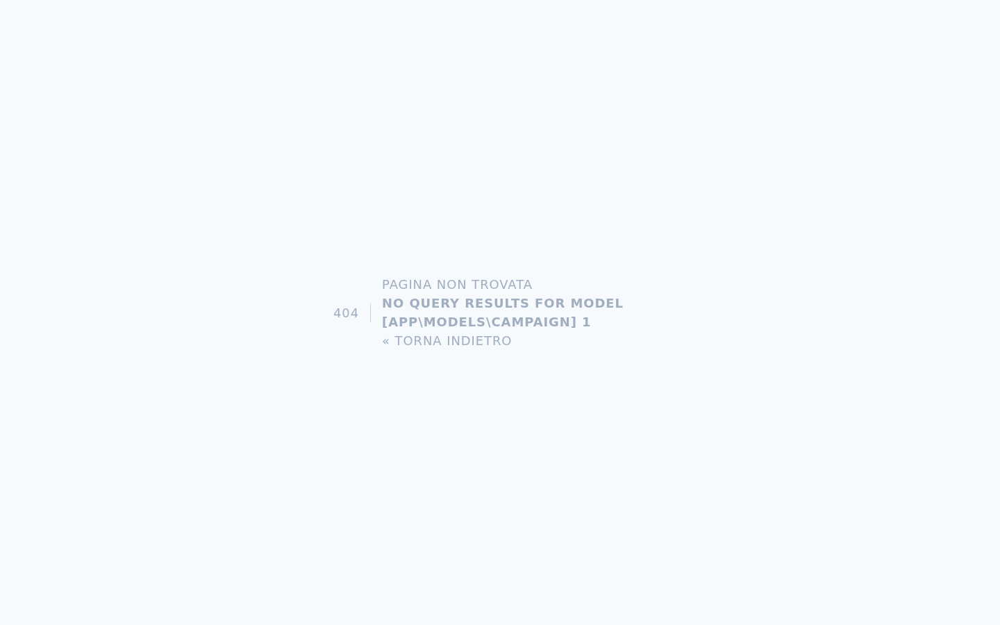
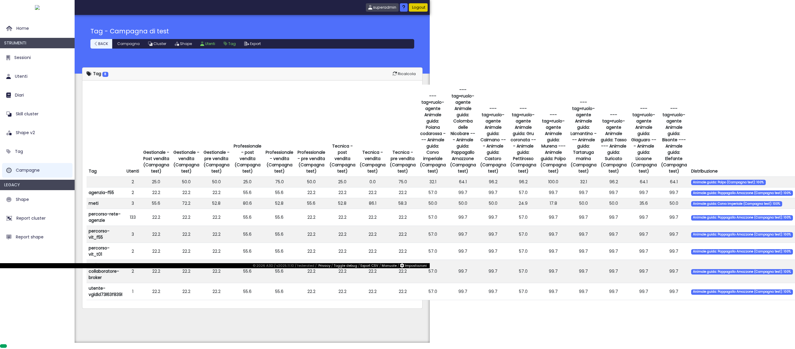
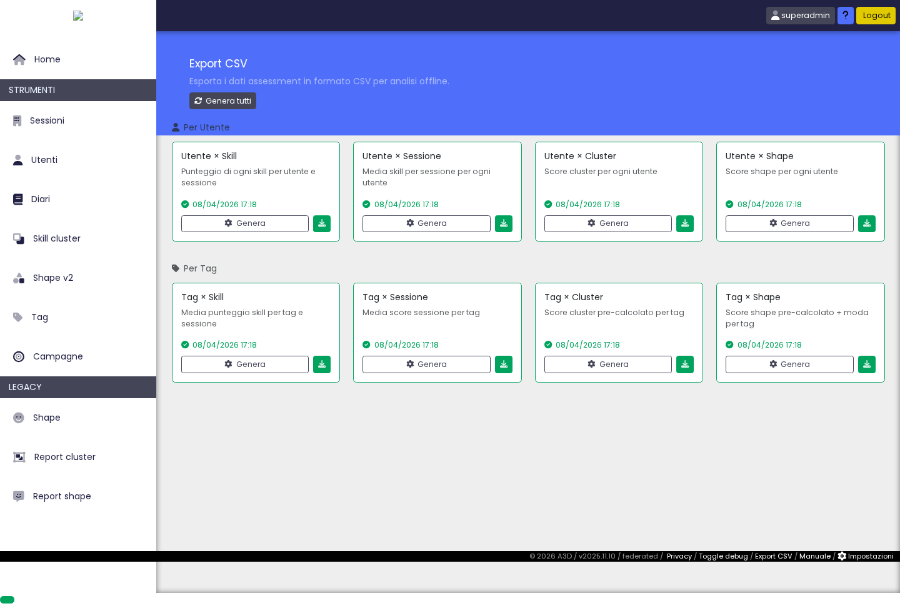
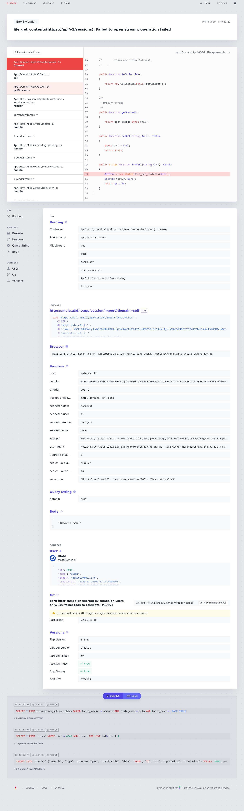
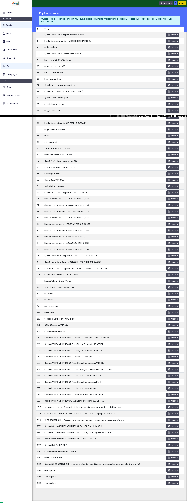
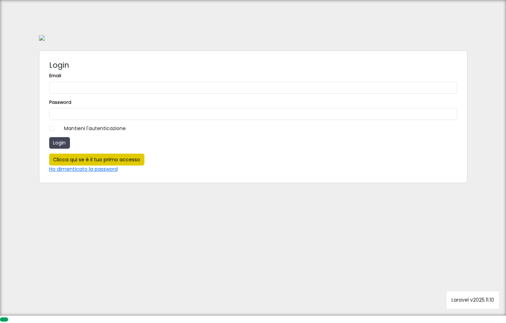

Migrazione cresco26 completata su server dedicato. 5 errori corretti su 7 segnalati. Rimangono il menu nel PDF e il logo mancante dopo la migrazione.
Il sito di produzione era irraggiungibile perche il vecchio server era stato spento. Abbiamo spostato tutto (database, file, configurazione) sul nuovo server dedicato A3D. Ora il sito e raggiungibile e protetto con certificato SSL.

Quando si impostavano le date di apertura e chiusura di una campagna, il sistema non le registrava. Ora le date vengono salvate correttamente. (Issue #1796)

La pagina dei tag era molto lenta perche caricava tutti i 228 tag della piattaforma. Ora carica solo quelli rilevanti per la campagna selezionata (circa 23), con un miglioramento di 10 volte. (Issue #1797)

I file CSV esportati per tag mostravano solo 3 tag invece di tutti quelli con utenti assegnati. Il filtro era troppo restrittivo. Ora vengono inclusi tutti i tag che hanno utenti nella campagna. (Issue #1798)

La pagina per duplicare una sessione esistente mostrava un errore e non permetteva di procedere. Il problema era legato a un'impostazione di sistema incompatibile con il nuovo server. Ora funziona correttamente. (Issue #1789 e #1792)


Quando si scarica il report PDF di una compilazione, la prima pagina include il menu di navigazione del sito che non dovrebbe essere visibile nel documento. Il contenuto del report (grafico e punteggi) e corretto. (Issue #1790)
Il logo della piattaforma non viene visualizzato nella pagina di accesso e in altre pagine. Il file immagine non e stato trasferito durante la migrazione al nuovo server. (Issue #1787)

| Campo | Valore |
|---|---|
| Server | s0.a3d.it (Hetzner CX23, 5.75.135.34) |
| Forge | Server 1182698, Site cresco26: 3120804 |
| Database | a3dcresco (dump da avocado 07/04) |
| PHP | 8.3.30 |
| Laravel | 9.52.21 |
| SSL | Let's Encrypt (Forge managed) |
| Scenario | bugfix |
| Iterazioni | 3 giorni (7-9 aprile) |